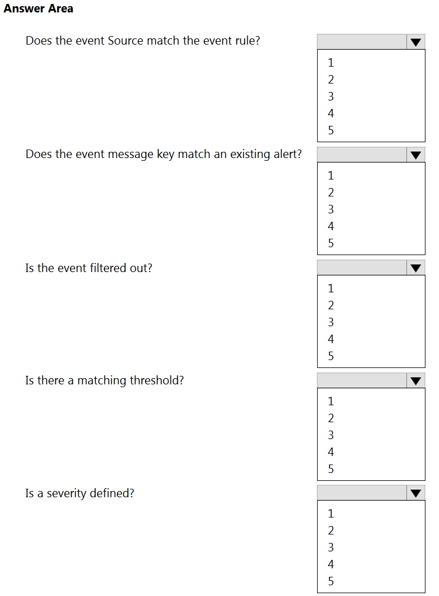
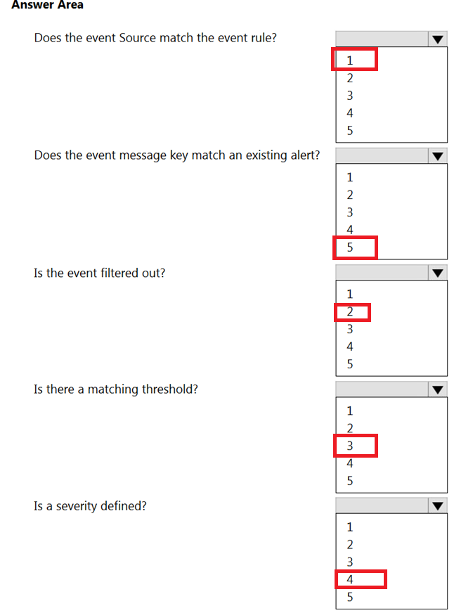

Answers verified with AI using ServiceNow documentation. Exercise your own judgement.
Question 1
When creating an alert management rule, where would you specify a workflow to resolve a given condition?
A. From the Remediation tab
B. From the Actions tab
C. From the Launcher tab
D. In the Related Links section
Question 2
What types of system can a MID Server install on? (Choose two.)
A. OpenVMS System
B. Microsoft Windows Server
C. Linux System
D. Microsoft Windows Desktop
E. Any system inside the customer firewall
F. Mac OS X System
Question 3
What would be the primary use case for creating Javascripts in Event Management?
A. To create a customized pull connector to retrieve events on behalf of an event source
B. To automatically populate the Configuration Management Database (CMDB)
C. To parse a nodename out of your raw event data in an event rule
D. To run as part of a remediation workflow for IT alerts that fail to execute
Question 4
What would you use to define the monitoring sources allowed to communicate with the ServiceNow instance for Operational Intelligence?
A. Metric Registration
B. Metric Config Rules
C. Metric Type Actions
D. Metric to CI
Question 5
The value of the Alert Priority score is a composite of what?
A. The value of the alert’s category and its relative weight
B. The value of the alert’s category and its Priority Group
C. The value of the alert’s Severity and its Priority Group
D. The value of the alert’s Severity and its relative weight
Question 6
Which attribute is responsible for de-duplication?
A. Metric_name
B. Message_key
C. Short_description
D. Additional_info
Question 7
How would you interpret the following data in the Operational Intelligence Insights Explorer?
A. win-ces882ierw is one of your hottest Configuration Items (CIs) that is currently experiencing a high probability of anomalies and should be checked immediately
B. win-ces882ierw is one of your hottest Configuration Items (CIs), but is currently experiencing a low probability of anomalies
C. win-ces882ierw is one of your customized list of monitored Configuration Items (CIs) that is currently experiencing a high probability of anomalies and should be checked immediately
D. win-ces882ierw is one of your customized list of monitored Configuration Items (CIs), but is currently experiencing a low probability of anomalies
Question 8
What is the default collection/polling interval applied to all event connectors?
A. Every 120 seconds
B. Every 5 seconds
C. Every 40 seconds
D. Every 60 seconds
E. Every 10 seconds
Question 9
Where can you look to determine what event rule created an alert? (Choose two.)
A. Alert Activity
B. Event Additional Information
C. Event Processing Notes
D. Alert Message Key
E. Alert Source
Question 10
What feature would you use to trigger a workflow or automatically generate tasks via templates?
A. Event rules
B. Task rules
C. Alert management rules
D. Alert correlation rules
Question 11
What are the valid states an alert can be in during its lifecycle?
A. Open, Reopen, Flapping, Closed
B. New, Updating, Waiting, Complete
C. Open, Updating, Swinging, Closed
D. Open, Warning, Flapping, Clear
Question 12
What Event Management module allows for configuration of automatic task creation?
A. Alert management rules
B. Task rules
C. Event rules
D. Alert correlation rules
Question 13
You have a system configured with a MID Web Server using Basic authentication to enable Operational Management Intelligence (OI) to push raw metric data to the MID Server. No data is getting through to the MID Server. What is the most likely cause of the issue?
A. The MID Web Server needs to be Restarted
B. The MID Web Server needs to be Started
C. An invalid secret key is being passed in the header information of the URL for the REST request
D. An invalid password is set in the MID Web Server Context
Question 14
In the event table, which field maps the external attributes from the target system?
A. Resource
B. Description
C. Source
D. Additional Information
Question 15
By default, the Alert Console displays what type of alerts?
A. All Primary, Open alerts and anomaly alerts with a Severity of Critical, Major, Minor, and Warning that are not in Maintenance mode
B. All Primary and Secondary Open alerts and anomaly alerts with a Severity of Critical, Major, Minor, and Warning that are not in Maintenance mode
C. All Primary alerts with a Severity of Critical, Major, Minor, Warning that are not in Maintenance mode
D. All Primary, Open alerts with a Severity of Critical, Major, Minor, and Warning that are not in Maintenance mode
E. All Primary and Secondary Open alerts with a Severity of Critical, Major, Minor, and Warning that are not in Maintenance mode
Question 16
Which are recommended best practices for Event Management? (Choose three.)
A. Filter out events on ServiceNow Instance for easier consolidation and aggregation.
B. Promote all events to alerts during initial implementation until you fully understand which should be ignored.
C. Filter out events at source rather than in the ServiceNow instance.
D. Base-line “normal-state” events to filter out background noise.
E. Ignore all non-critical events during initial implementation to streamline processing; add alerts over time as time and resources allow.
Question 17
For an incoming event with a matching message key, what allows an existing alert to be automatically closed?
A. In the event rule, set the Severity to 0
B. In the alert rule, set the Severity to 0
C. In the alert rule, set the Severity to -1
D. In the event rule, set the Severity to -1
Question 18
A support agent resolves an incident associated with an alert, but the alert does automatically close even though the evt_mgmt.incident_closes_alert property is set appropriately to close the alert. What is the most likely cause of this issue?
A. The support agent does not have the evt_mgmt_user role.
B. The support agent only has the evt_mgmt_admin role.
C. The support agent has the evt_mgmt_operator role, but not the evt_mgmt_user role.
D. The support agent has the evt_mgmt_user role, but not the evt_mgmt_operator role.
Question 19
What are the two most accurate statements regarding the ServiceNow CMDB (configuration management database) and CIs (configuration items)?
A. The CMDB is a series of tables that contain only key hardware components located in critical paths within your platform that must be managed.
B. The CMDB is a dynamic list that tracks both the CIs within your platform and the relationship between those items.
C. All CIs stored in the CMDB must have an assigned IP address within your infrastructure.
D. A CI is any component within your infrastructure that needs to be managed in order to deliver Services.
Question 20
What would you use as a central location to explore the CMDB class hierarchy, CI table definitions, and CIs?
A. CI Remediations
B. CI Relation Types
C. CI Identifiers
D. Process to CI Type Mapping
E. CI Class Manager
Question 21
A four node cluster makes up the components (CIs) of a Business Service. The impact influence for the cluster is set to 60%. How many members of the cluster must be in a Critical state in order for the Business Service to display as Critical in the Impact Tree?
A. 1
B. 2
C. 3
D. 4
Question 22
Which the following alert promotion rule defined in your ServiceNow instance, which of the anomalies below would be automatically promoted into IT alerts on the Alert Console?
A.
B.
C. Both anomaly A and anomaly B
D. Neither anomaly A or anomaly B
Question 23
By default, Event Management tries to bind an alert to CI (configuration item), by matching the node name in the event to which three items in the CMDB (configuration management database)?
A. CI name, Fully qualified domain name, IP or MAC address
B. CI name, Webserver name, IP or MAC address
C. CI name, Fully qualified domain name, SSH public host keys
D. System class name, Fully qualified domain name, IP or MAC address
Question 24
The MID Server requires an outbound connection on which port?
A. 445
B. 161
C. 443
D. 143
Question 25
If more than one event rule applies to a particular event or metric, which of the event rules will run based upon the Order of execution number?
A. Only the event rule with the highest Order of execution number will run.
B. Only the event rule with the lowest Order of execution number will run.
C. All event rules will run, from the lowest to the highest Order of execution numbers.
D. All event rules will run, from the highest to the lowest Order of execution numbers.
Question 26
When creating event rules, is it best practice to create:
A. Two rules for every event
B. As many rules as possible
C. As few rules as possible
D. One rule for every event
Question 27
During processing of the event and if the event Severity is blank, the state of the event is set to:
A. Ready
B. Ignored
C. Error
D. Processing
Question 28
What two key steps must be performed after creating a new connector instance? (Choose two.)
A. Assign a MID Server to the connector
B. Enter credentials for the connector
C. Debug the connector
D. Test the connector
E. Activate the connector
Question 29
A customer informs you that they already have monitoring and event management tools. Which of the following describes the extra value that ServiceNow Event Management provides? (Choose four.)
A. ServiceNow Event Management Alerts, Incidents, Problems, and changes are automatically correlated with CIs and Business Services that can be visualized in Business Service maps.
B. ServiceNow Event Management manages relationships between alerts and related incidents to maintain an end-to-end event management lifecycle.
C. ServiceNow Event Management provides a business-centric platform and single system of record for service monitoring and remediation results, to better control and manage performance and availability.
D. ServiceNow Event Management provides state-of-the-art performance monitoring capabilities across a wide array of different types of infrastructures.
E. ServiceNow Event Management utilizes the power of MID Servers provide important functions in your ITOM Health deployment. What does MID stand for? A. Management, Instrumentation. and Discovery B. Messaging. Integration, and Data C. Monitoring. Insight. and Domain D. Maintenance, Information, and Distribution with leading monitoring systems to automatically create actionable alerts.
Question 30
You have an event with a Source of ‘Trap from Enterprise 111’, but the alert created for this event shows a Source of ‘Oracle EM’. If you want to change what this is set to, where in the event rule would you do this?
A. Transform and Compose Alert Output lab
B. Event rule info tab
C. CI Binding tab
D. Event Filter tab
Question 31
Copies of checks that have been included in Agent Client Collector policies are known as what?
A. Check definitions
B. Check models
C. Check clones
D. Check mirrors
E. Check instances
Question 32
How often do baseline event connectors retrieve events?
A. Every 30 seconds
B. Every 2 minutes
C. Every 10 minutes
D. Every 1 minute
E. Every 5 minutes
Question 33
Which attribute correlates multiple events to one alert?
A. Additional_info
B. Message_key
C. Metric_name
D. Short_description
Question 34
What attribute is used to consolidate events into a single alert?
A. Event Rules
B. Message Key
C. Alert Priority
D. Severity
Question 35
Which attribute within an event needs to be exactly the same to allow for deduplication?
A. Metric Name
B. Message Key
C. Type & Node
D. Description
E. Correlation ID
Question 36
In default configuration using baseline connectors, how often is event data collected from event sources?
A. Once every minute
B. Every 2 minutes
C. Twice every minute
D. Every 5 minutes
Question 37
What applications are included in the ITOM Health product?
A. Event Management and Operational Intelligence
B. ITOM Visibility
C. Discovery and Service Mapping
D. Cloud Management
Question 38
What is one of the main benefits of using Event Management and Operational Intelligence?
A. To improve service availability by helping IT staff pinpoint service issue causes and evaluate the impact of planned changes.
B. To increase service agility and produce fast, predictable results by automating manual, routine, error-prone tasks.
C. To rapidly configure and launch secure, agentless discovery of hardware and software resources and their relationships.
D. To proactively warn against possible service outages using a range of advanced predictive machine learning methods.
Question 39
MID Servers provide important functions in your ITOM Health deployment. What does MID stand for?
A. Management, Instrumentation, and Discovery
B. Messaging, Integration, and Data
C. Monitoring, Insight, and Domain
D. Maintenance, Information, and Distribution
Question 40
Out-of-the-box, how often do the events get processed in ServiceNow?
A. Every 5 seconds
B. Every minute via a scheduled job
C. As soon as the event record is inserted via a business rule
D. Depends on connectors used
Question 41

HOTSPOT - In what sequence are events processed?

Question 42
Which is not a valid method for accessing alert intelligence?
A. In the right-click menu of an alert list, select Open in Workspace
B. By appending/workspace to your instance URL
C. The application navigator Alerts Console menu item
D. The application navigator Alert Intelligence menu item
E. Within an open alert record, click the Open in Workspace button
F. Select the Lists tab in operator workspace
Question 43
To determine the top incidents for the CI associated with an alert, where is the best place to look?
A. Alert Insights
B. Incident List View
C. CMDB Health Dashboard
D. Event Management Overview page
Question 44
Agent Client Collector is built on what framework that enables you to adopt and extend monitoring checks from the community?
A. Icinga
B. Sensu
C. SolarWinds
D. Nagios
E. Zabbix
Question 45
Based on the information shown, which of the following three alerts should be processed first?
A. The Alert Priority score 3106020.001 was calculated according to the following factors, ordered by their respective priority (2018-06-01 19:34:01 GMT) Category (Score, Weight)
1. Business services – (3.0, 1000000)
2. Severity – (1.0, 100000)
3. CI type – (60.0, 100)
4. Role – (2.0, 10)
5. Secondary – (0)
6. State – (1.0, 0.001)
B. The Alert Priority score 4406020.001 was calculated according to the following factors, ordered by their respective priority (2018-05-31 20:04:47 GMT) Category (Score, Weight)
1. Business services – (4.0, 1000000.0)
2. Severity – (4.0, 100000.0)
3. CI type – (60.0, 100.0)
4. Role – (2.0, 10.0)
5. Secondary – (0)
6. State – (1.0, 0.001)
C. The Alert Priority score 3306020.001 was calculated according to the following factors, ordered by their respective priority (2018-05-31 19:56:54 GMT) Category (Score, Weight)
1. Business services – (3.0, 1000000.0)
2. Severity – (3.0, 100000.0)
3. CI type – (60.0, 100.0)
4. Role – (2.0, 10.0)
5. Secondary – (0)
6. State – (1.0, 0.001)
D. They should be processed in the order in which they were received.
Question 46
Applying recommended Event Management best practice guidelines, which of the following events should generate an alert?
A. Every event should generate an alert so you have the opportunity to resolve them all.
B. Only events that necessitate action should generate an alert.
C. Only the most critical events on every CI in the CMDB should generate an alert.
D. Every event on every critical CI in the CMDB should generate an alert.
Question 47
What makes all ServiceNow metrics, tasks, services, configuration items, assets, people, locations, and information a single system of record for IT and business processes?
A. ServiceNow is installed within your datacenter providing you complete control
B. All applications are built on the Oracle database standard, providing uniformity across products
C. All applications that are built by ServiceNow utilize the same data model and code base
D. ServiceNow runs on supported Windows servers and is managed through Windows Update
E. A single table houses all data elements within ServiceNow
F. ServiceNow utilizes the AWS MariaDB cloud database structure, providing a single system of record
Question 48
You have a very large networking environment and have noticed that your event notifications are either not being triggered or are delayed. What are best options to try to resolve this issue? (Choose two.)
A. Ensure all Event Management – process events jobs are set to a Ready state
B. Verify that the Bucket field in the event table is set to zero (0)
C. Add additional event processor jobs
D. Ensure multi-node event processing is disabled
Question 49
What event value will auto close an alert?
A. Severity of -1/OK
B. Type of Clear
C. Resolution State of Closing
D. Resolution State of Clear
E. Severity of 0/Clear
Question 50
Given the following Impact settings and Alerts in a three node cluster that makes up the components of a Business Service, what is the overall service health of this Business Service?
A. Critical
B. Error
C. Major
D. Minor
E. Warning
F. Clear
Question 51
What does Operational Intelligence proactively identify before they cause service outages?
A. Missing CMDB data
B. Defects
C. Alert correlations
D. Orphaned CIs
E. Anomalies
Question 52
What is the function of the External Communication Channel (ECC) Queue? (Choose three.)
A. It is a connection point between a ServiceNow instance and the MID Server.
B. It contains probe records to be executed on the customer’s network.
C. It holds jobs that the MID Server needs to perform.
D. It is a connection point between a hardware CI on a customer’s network and the MID Server.
E. It contains records of CIs that the ServiceNow admin has submitted for entry into the CMDB.
Question 53
The correct regex to capture the name of the server in “the server webserver3.domain.com is down” would be:
A. .*(\w+\.\w+\.\w+).*
B. The server (.*)\s.*
C. .*\s(\w+\.\w+\.\w+).*
D. the server (.*).*
Question 54
What is the recommended approach to normalizing data from a source system to the default values in Event Management?
A. Event field mapping
B. Transform maps
C. Alert management rules
D. Business rules
Question 55
You have an event that needs to be bound to a non-host CI. Which attribute needs to be removed from the Transform and Compose tab?
A. Source Instance
B. Metric Name
C. Node
D. Resource
Question 56
When are anomaly alerts generated by Operational Intelligence displayed in alert intelligence?
A. When the statistical model threshold is breached
B. When they are promoted to IT alerts
C. When it is manually promoted in insights explorer
D. When the anomaly score is greater than 100
Question 57
What are the possible actions available in alert management? (Choose three.)
A. Execute remediation subflows
B. Execute remediation workflows
C. Launch applications
D. Evaluate business rule
E. Create a service catalog request
Question 58
What ServiceNow feature would you configure to process incoming email to create events?
A. Transforms
B. Inbound actions
C. Event processing jobs
D. Event Filter
E. Event field mapping
Question 59
Within a PowerShell script, which two URI’s could you use to log events directly to the ServiceNow event table? (Choose two.)
A. https://[Your_ServiceNow_instance_URL]/rest_api/now/my_tables/em_event
B. https://[Your_ServiceNow_instance_URL]/api/global/em/jsonv2
C. https://[Your_ServiceNow_instance_URL]/api/now/table/em_event
D. https://[Your_ServiceNow_instance_URL]/api/table/em_event
E. https://[Your_ServiceNow_instance_URL]/rest_api/now/table/em_event
Question 60
If more than one alert management rule applies to a particular alert, which of the rules will run based upon the Order of execution field?
A. Only the alert management rule with the highest Order of execution number will run.
B. Only the alert management rule with the lowest Order of execution number will run.
C. All alert management rules will run, from the lowest to the highest Order of execution numbers.
D. All alert management rules will run, from the highest to the lowest Order of execution numbers.
Question 61
Alerts are processed using which of the following? (Choose three.)
A. Alert management rules
B. Event action rules
C. Event rules
D. Scheduled jobs
E. Java and Groovy scripts
Question 62
The individual commands that the Agent Client Collector executes on the host are known as what? (Choose three.)
A. Events
B. Checks
C. Parameters
D. Policies
E. Metrics
F. Scripts
Question 63
What is Event Management licensing based on?
A. The number of unique nodes that can send events to the instance
B. The number of connectors and listeners it will collect data from
C. The number of connectors it will collect data from
D. The number of CIs in the CMDB that it will be monitoring
Question 64
What missing attribute would cause an event to have a state of Error?
A. Metric Name
B. Source
C. Classification
D. Node
E. Severity
Question 65
Modified Agent Client Collector policies do not take effect until what action is taken?
A. The check is tested on an existing agent/host
B. The policy is republished
C. Agents re-run the discovery policy
D. MID server synchronization is initiated
E. Agents are restarted
Question 66
What does the Asynchronous Messaging Bus (AMB) channel do on the MID Server?
A. Opens an inbound connection to the MID Server
B. Allows Web Server transactions to be passed to ServiceNow
C. Sends heartbeat information to the ServiceNow instance to ensure MID is communicating
D. Continually queries the External Communication Channel (ECC) queue via a persistent query
Question 67
Within the ServiceNow IT Operations Management solution set, which statement most accurately describes what Event Management is?
A. The process responsible for defining, analyzing, planning, measuring, and improving all aspects of the availability of IT services
B. The process responsible for ensuring the capacity of IT Services and IT infrastructure is able to deliver agreed upon service level targets in a cost-effective manner
C. The process responsible for monitoring all abnormal occurrences throughout the IT infrastructure, allowing for normal operations, and detecting and escalating exception conditions
D. The process responsible for recovery action and planning through machine learning
Question 68
When creating a task from an alert what Event Management Module would be used?
A. Event Rules
B. Alert Correlation Rules
C. Task Management
D. Alert Management
Question 69
What is the preferred method of parsing in the Transform/Compose step of an event rule?
A. Python
B. Regex
C. sed/awk
D. JavaScript
Question 70
What are the server requirements to allow Operational Intelligence to successfully collect operational metric data via a push?
A. This requires a minimum of three MID Servers - two for Event Management and one additional MID Server dedicated for use by Operational Intelligence (OI).
B. This requires a MID Web Server in addition to the MID Server.
C. Nothing additional is required; this is handled by the MID Server.
D. This requires a minimum of two MID Servers - one for Event Management and one additional MID Server dedicated for use by Operational Intelligence (OI).
Question 71
What would be an appropriate use case for having to write JavaScript in Event Management?
A. To change the value of the message key
B. To create a custom action within a subflow
C. To parse a node name out of your raw event data in an event rule
D. To automatically create an incident
Question 72
A dynamic grouping of CIs based upon common criteria (filtered CI classes) that can be visualized in operator workspace is called?
A. A business service
B. A technical service
C. An application service
D. A manual service
E. A scoped service
Question 73
During CI binding, CI matching is done using which two fields? (Choose two.)
A. Message Key
B. Additional Information
C. Source
D. Node
Question 74
What three areas of data quality does the CMDB Health Dashboard focus on? (Choose three.)
A. Correctness
B. Completeness
C. Configuration
D. Conciseness
E. Conformity
F. Compliance
Question 75
When sending data from the monitoring source to the additional_info field, what format is supported?
A. XML
B. JSON
C. YAML
D. Comma separated
Question 76
Which step in the event rule configuration process enables you to ignore events and prevent alert generation?
A. Transform and compose alert output
B. Event filter
C. Event options
D. Threshold
Question 77
What is an alert called that moves from an open to a closed state multiple times within a designated time-frame?
A. Fluctuating
B. Swinging
C. Flipping
D. Flapping
Question 78
How would you ensure the quality of data in your Configuration Management Database (CMDB) over time?
A. Manually inventorying configuration items in the CMDB and eliminating duplicate configuration items (CIs)
B. Only use the ServiceNow Discovery application to populate your CMDB
C. Using only scripts to automatically monitor for and remediate duplicate configuration items (CIs)
D. Having well-defined Identification, Reconciliation, and Relationship rules
Question 79
Which is an invalid state for an alert?
A. Flapping
B. Closed
C. Reopen
D. Processed
Question 80
A support agent resolves an incident associated with an alert. What is the best method to close the alert?
A. Set the evt_mgmt.incident_closes_alert
B. Set the evt_mgmt.alert_closes_incident
C. Switch over to the alert form and close the alert manually
D. Create a business rule on the alert table to match the associated Incident with its respective alert
E. Create a business rule on the incident table
Question 81
Impacted services for alerts are calculated using data from which table?
A. cmdb_ci_hardware
B. em_impacted_svc
C. cmdb_ci_rei
D. svc_ci_assoc
Question 82
A monitoring tool notification of a notable occurrence is known as what?
A. An alert
B. An event
C. A metric
D. An alarm
Question 83
If a Message Key is not provided, which fields are concatenated to make our own?
A. Source, DNS, Node, Additional info, Metric Name
B. Source, Type, Node, Resource, Metric Name
C. Source, Type, DNS, Additional info, Metric Name
D. Source, Source Instance, Node, Type, Resource
Question 84
A load balanced web application has a cluster of 5 Apache nodes. When considering impact calculation with application cluster member rule influence set to 45, how many impacted nodes within that cluster would cause the overall application service to have a degradation of service?
A. 5
B. 1
C. 2
D. 3
E. 4
Question 85
A Service is not viewable in Operator Workspace. What could be the issue?
A. The service is a manual service
B. The service is not set to operational
C. The service was created through Service Mapping
D. The service is a technical service
Question 86
What ServiceNow feature is an aid to rapid implementation of your Event Management and Operational Intelligence features?
A. Deployment wizard
B. Step-by-step guide
C. Checklist application
D. Guided setup
Question 87
The ServiceNow standard and shared set of service-related definitions that enable and support true service level reporting is known as what?
A. Service level data model
B. Business service data model
C. Application service data model
D. Common service data model
Question 88
A monitoring tool notification of a notable occurrence is known as what?
A. An alarm
B. An alert
C. An incident
D. A notice
E. An event
F. A metric
Question 89
Which is the best option to reduce latency issues when receiving events?
A. Verify bucket field in em_event table > 0
B. Verify event_processor_job_count = 2
C. Verify event_processor_job_count = 0
D. Verify event_processor_enable_multi_node = 2
Question 90
The default polling time to collect events from an event source is:
A. 5 seconds
B. 30 seconds
C. 60 seconds
D. 120 seconds
Question 91
Which two methods can be used to improve the processing of events in large network environments? (Choose two.)
A. Enable multi-node processing
B. Increase the source polling interval
C. Ensure the bucket value in the event table is greater than 0
D. Increase the number of scheduled jobs processing events
Question 92
The Event Management operator workspace can display all of the following except?
A. Alert groups
B. Manual application services
C. Discovered application services from Service Mapping
D. Correlation groups
E. Technical services
Question 93
Within an event rule, how would you parse a nodename out of your raw event data?
A. JavaScript
B. Groovy script
C. PowerShell script
D. Regex statement
Question 94
If events are not matching to alerts as you would like, what field should be changed?
A. Resource
B. Message Key
C. Node
D. Metric Name
Question 95
If the Message Key is not populated, the default value is created from which fields?
A. Source, type. node, resource, and metric name
B. Source, source instance, node, and resource
C. Source, type. node, and metric name
D. Source, source instance, node, and type
E. Source, type. node, resource, and time of event
Question 96
Processing on an event will create a state of error if what value is not set?
A. Node
B. Source
C. Severity
D. Message Key
E. Resource
Question 97
When performing CI Binding, what fields does Event Management match to the Node?
A. CI Name, DNS, IP, MAC Address
B. System class name, FQDN, IP or MAC address
C. CI name, FQDN, SSH public host keys
D. CI Name, FQDN, IP, MAC Address
Question 98
Applying recommended Event Management best practice guidelines, which of the following alerts should be processed first?
A. Alert00l0042
B. Alert0010003
C. Alert00l0075
D. Alert00l0074
Question 99
What is the minimum role needed to view alerts?
A. alert_operator
B. evt_mgmt_user
C. evt_mgmt_operator
D. alert_user
Question 100
By default, when are idle alerts are closed?
A. After 7 days
B. After 14 days
C. After 30 days
D. Never
Question 101
What is used to correctly bind an alert to an application?
A. Correlation rules
B. Workflows
C. Classifiers
D. CI identification rules
Question 102
If you wanted to create a quick response alert rule to open an Ask Jeeves search on the description of the alert, where would it configured?
A. Launch Applications
B. Remediation Workflows
C. Remediation SubFlows
D. Operator Workspace
Question 103
Where would you find the Priority Breakdown for an Alert?
A. Under the More Information section
B. Under the Activities section
C. Under the History section
D. Under the CI Problems section
Question 104
Where does an operator give feedback on an automated alert grouping?
A. Feedback attribute on the virtual alert record
B. Feedback attribute on the child alert record
C. Feedback attribute on the event record
D. Feedback attribute on the alert record
E. Dropdown box on the alert group record
Question 105
In your environment, no alert CMDB, automated, or text based grouping is occurring. What is most likely the problem?
A. No correlation rules have been defined
B. No event management rules have been defined
C. Application services are not operational
D. No CMDB is configured
E. The alert correlation property that enables grouping is set to false
Question 106
The additional information field is a JSON string that gives more information about an event. An example of a supported JSON string is:
A. {"CPU":100}
B. {"CPU":100,’Status":3}
C. {"CPU":"100","Status":3}
D. {"CPU":"100"}
Question 107
In order for SNMP trap notifications to appear in ServiceNow as events, what option must be enabled in the required MID server?
A. MID SNMP trap listener
B. SNMP event manager module for MID
C. Event collector MID server extension
D. SNMP agent for MID
Question 108
What event will cause Agent Client Collector self-monitoring to pause data collection?
A. Communication with the MID server is lost
B. The amount of host memory being used by the agent exceeds a threshold
C. Communication with the ServiceNow instance is lost
D. The amount of host disk space used by the agent exceeds a threshold
E. The amount of host CPU being utilized by the agent exceeds a threshold
Question 109
Agent Client Collector can perform application service monitoring by configuring what option?
A. An alert management rule
B. A proxy agent
C. A distributed cluster
D. An event rule
E. A REST API
Question 110
In baseline configuration, how old are events before they age out of the em_event table?
A. 3 days
B. 14 days
C. 7 days
D. 30 days
Question 111
Tag-based alert clustering causes incoming alerts to join an existing group based on what?
A. The alert clustering filter matches the primary alert of the group.
B. The defined tags match fifty percent or greater of the tags of all alerts in the group.
C. Both the alert clustering tags and the alert clustering definition filter match that of the primary alert of the group.
D. The alert tags match the tags of the primary alert of the group.
E. The alert tags match the tags of all the alerts in the group.
Question 112
What applications are included in the ITOM Health solution? (Choose three.)
A. Agent Client Collector
B. Cloud Provisioning and Governance
C. Service Mapping
D. Discovery
E. Event Management
F. Health Log Analytics
Question 113
An application service discovered by Service Mapping can be displayed on the Event Management operator workspace if which of the following attributes is configured?
A. Operational status is set to ready
B. Discovery status is set to processed
C. Discovery status is set to done
D. Operational status is set to operational
Question 114
Tag-based alert clustering requires the configuration of what forms? (Choose two.)
A. Event rule clustering rules
B. Alert clustering patterns
C. Alert correlation rules
D. Alert clustering tags
E. Alert clustering definitions
F. Alert management clustering rules
Question 115
What is the primary function of enrich automation in Service Operations Workspace?
A. To populate events with more meaningful information
B. To manage team roles and permissions
C. To transform and compose event rules
D. To generate alerts populated with more meaningful information
Question 116
What is the primary function of the link view feature in the Service Operations Workspace express list?
A. To automatically generate incidents from linked alerts
B. To manage user permissions across teams
C. To visualize tag-based alert groups
D. To update the CMDB dependency map
Question 117
What does Now Assist for ITOM use to provide alert analysis?
A. Third-party monitoring tool connectors with out-of-box alert rules
B. GenAI and the ServiceNow large language model
C. Basic keyword matching in the alert description and tags
D. The unified service map and link view topology
Question 118
Which is a correct regex expression to capture only the server's hostname (webserver3) in "The server webserver3.domain.com is down."?
A. The server (.*)\..*
B. .*(\w+\.\w+\.\w+).*
C. The server (.*)\s.*
D. The server (.*?)\..*
Question 119
What does the Service Operations Workspace express list reduce the need for? (Choose two.)
A. Conducting root cause analysis
B. Constantly refreshing the list of alerts
C. Navigating through different interfaces
D. Performing remediation actions
Question 120
What are the key components that can be managed using Service Operations Workspace integrations launchpad?
A. Event Connectors, Metric Policies, Log Data Inputs
B. Event Management, Metric Policies, Log Monitoring
C. Event Management, Metric Intelligence, Log Monitoring
D. Event Connectors, Metric Intelligence, Log Data Inputs
Question 121
Service Operations Workspace integrations launchpad capabilities include management of which key components? (Choose three.)
A. Event connectors
B. Alert management rules
C. Metric policies
D. Log data inputs
Question 122
What determines if an alert management rule's actions apply to an alert?
A. The alert's bound configuration item
B. The alert management rule's filter
C. The alert management rule's field mapping
D. The message key
Question 123
When setting up a monitoring connector definition PULL, the MID Server must be validated and have Line of Sight (LoS) to the monitoring system. This configuration requires what? (Choose four.)
A. Polling interval for scheduling access to the target system
B. Internal IP address and port for communication with the target system
C. An active and validated MID Server
D. Access credentials to the MID Server system
E. Internal IP address and port for communication with the MID Server system
F. Access credentials to the monitoring system
Question 124
In Service Operations Workspace, what tool shows relationships between configuration items and alerts with real-time updates and detailed impact paths?
A. CMDB identification and reconciliation engine (IRE)
B. Unified service map
C. Dependency view map
D. CMDB class manager
Question 125
What role is required to create a Technical Service?
A. evt_mgmt_integration
B. evt_mgmt_user
C. evt_mgmt_operator
D. evt_mgmt_admin
Question 126
What is one of the benefits of using alert automation in Service Operations Workspace?
A. It offers a simplified experience for creating and managing event and alert related rules
B. It uses back-end tables separate from those in event management rules
C. It enables centralized administration for all alert management
D. It does not require any knowledge of the source event collection tool